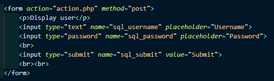
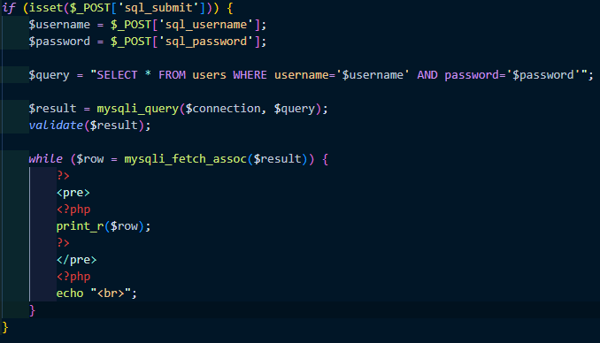
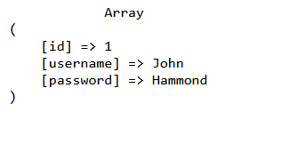
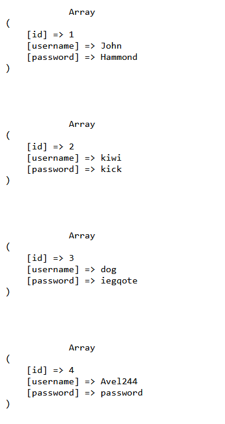

This website won't be hosted live for obvious reasons. Database used: mySQL
This is the first part of my web security series, where I'll show how to exploit simple sql injections, so I can keep track of my progress as I learn about more techniques and remind myself if I ever forget. Please take my writing with a grain of salt as I'm still learning.. Also, please make sure you're hacking legally, don't attack other people's websites without their permission, best to attack your own machine :)
First thing's first, before we can perform a basic sql injection, we first need to understand how we're connecting and passing SQL queries into our mySQL database using php. Since I'm not hosting this website, if you want to clone this repo, you'll have to create your own mySQL database. To do this, I would suggest installing XAMPP so you can run Apache and MySql to host your website locally. Make sure to start Apache and MySQL on XAMPP. After that, we'll head over to 127.0.0.1/phpmyadmin on a web browser. We're essentially going to a MySQL administration tool on our localhost (our local machine). Also ensure that you have cloned the repo and are running this webpage on 127.0.0.1 using XAMPP as that's the address I've set the PHP database connection to.
Navigate to the SQL tab at the top, we'll create a database in SQL instead of doing it manually so we can get used to some SQL.
Code: CREATE DATABASE sql_playground;
Quite self explanatory, this statement will create a SQL database called "sql_playground". I'm using "sql_playground" for the name as that's the database name I've specified to connect my php code to.
A SQL database is similar to MS Excel, as they both store data in the form as tables, often known as a relational model.
How does Code find database values (some background theory)
Code is executed via the CPU (processor), and the code itself is stored in the main memory (variables are stored in the stack, and can point to allocated memory in the heap. Because databases are usually stored in a seperate storage, say the harddrive of the computer, the code cannot directly access the database unless the database tables are sent to the main memory for the code to access.
Enough rambling, let's get back to finishing our database. Let's create a new table for our new database.
Now, before we inject code, we first need to understand why we can inject code into user inputs.
Most of the web exploits target one specific area of a website: user input.

This is a simple HTML form that takes input for a username and password (btw, if you ever want to check your password/check a password on screen in plaintext, simply edit the input type for the password input in inspect element).
We can see that this is form is being submitted as a POST request. If a user login form was submitted using a GET request, hackers may be able to use form action hijacking
to redirect users to their own malicious site. Now, let's look at how PHP processes this:

As we can see in this PHP code that runs when the Submit button is pressed, PHP will send a SQL query via the "mysqli_query" function, an updated version of its vulnerable predecessor "mysql_query".
The SQL query will essentially display the row of the logged in user from the table of users (the table we created in our database).
Notice that the query is being sent straight to the database without any sanitisation, which means if we were to add our SQL queries alongside the sent query, we'll be able to do a lot of sketch stuff with the database.
Think of it like we're sending a minion dressed as a soldier to infiltrate an army base alongside other legitimate soldiers inside a mobility tactical truck.
Now, the current SQL being run is:
SELECT * FROM users WHERE username='$username' AND password='$password';
This query will select all from the 'users' table where the username and password in the database is equal to the username and password we input into the website
Of course, by the time the query is sent, the variables $username and $password would be replaced by the values contained within the two variables.
If we sent username 'Chicken' and password 'Peas', the query that would run in SQL would be:
SELECT * FROM users WHERE username='Chicken' AND password='Peas';
Now, what would happen if we were to add and extra single quote next to our username? It'll become:
SELECT * FROM users WHERE username='Chicken'' AND password='Peas';
This will produce a syntax error in SQL, as there's an extra single quote after 'Chicken'. This is a common way to check if a website isn't sanitising user input and is prone to direct SQL injection.
Now, to manipulate this, we'll need to put our knowledge of SQL into use. We first need to understand that the above query will either produce TRUE or FALSE. If the statement is true, where both username and password matches,
print the row, else if it's false, return a blank page.
For this example, we'll assume we know a user in the database is called 'John', but we don't know his password.
How would we pass an additional query inside our username/password to ensure the statement is always true?
We can let it check if a statement that will always be true is indeed true, instead of checking the password.
We can do this by using the 'OR' statement to check if a certain parameter is true, OR, something else is true. And that something will be a statement that is always true. Is 1=1 always true? Yes indeed (I hope).
Keep in mind that a single quote will end a string, so if we're injecting code into the password input, we'll inject something the lines of:
' OR 1=1#
# will comment everything afterwards in mySQL (if # doesn't work, the database probably isn't mySQL, so try --). The final resulting code will be:
SELECT * FROM users WHERE username='John' AND password='Peas' OR 1=1#';
As you can now see, we now have a SQL query that will print out the user row of John, as username is indeed John (for this example), and either password='Peas' or 1=1 is true.

We have succeeded in printing the details of John. Now, you must be thinking, what if I don't know the username or password? In that case, you'll do the same thing (' OR 1=1#), but in the username parameter.
Essentially we'll have:
SELECT * FROM users WHERE username='' OR 1=1#' AND password='Peas';
The # will comment out password, and if you submit the query ' OR 1=1# you'll get all of the users in the table:

Congrats! You have learnt the theory and how to perform a basic SQL Injection!
We're not limited to just submitting true statements, we can also use stuff like union and other statements to delete a table, show a table and do many other things.
The thing is, developers will always try to implement measures to prevent SQL injections, and one example would be the use of radio buttons/dropdown box so the attacker cannot input a SQL injection into the input parameters.
We're take a look at how we can bypass this in the next section (when I can find the effort to write the second section of this series... *sigh*)
Anyways, I really hope this beginner guide was useful in some way and that you learnt something, I'm still new to web security, so maybe I got a thing or two wrong in this guide
(also I kinda rushed this at 3am, so ignore any grammar/spelling mistakes)..
Happy Hacking!